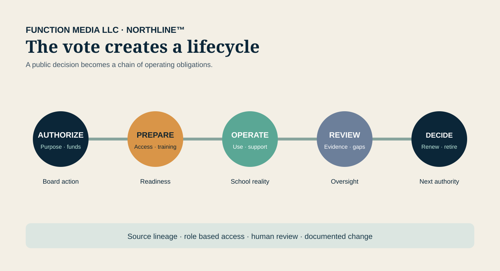
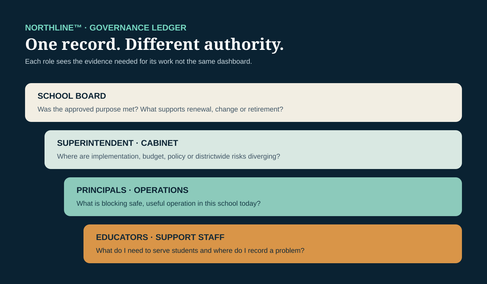

The Board Vote Is Only the Beginning
A NORTHLINE™ field essay from Function Media LLC
At 7:14 on a Tuesday night, the board chair asks for a motion.
The item has already been through months of work: teacher interviews, security review, a pilot, budget revisions, public questions and a recommendation from the superintendent. The district is considering a new learning and operations platform. The price is printed in the packet. The implementation date is on the slide. Five board members vote yes.
The room exhales. The item is marked approved.
But the decision has not ended. It has changed form.
By Wednesday morning, the vote has become a chain of obligations. Someone must finalize the contract. Someone must confirm which student and employee data the system may receive. Rosters have to move correctly. Teachers need useful training, not a login and a PDF. Families need an explanation. Devices, identity systems, accessibility settings and help-desk procedures must all be ready. The district must know what success will look like before renewal season arrives.
The board approved a product. The school system inherited a lifecycle.
A public decision with a long operational tail
School technology is often discussed at the moment of purchase. That is understandable. A board packet has to explain cost, purpose and authority clearly enough for a public vote. Yet the most consequential questions emerge after approval:
- Did the tool reach the students and educators it was intended to serve?
- Did it integrate with the systems already carrying schedules, identities and records?
- Were privacy, security and accessibility promises translated into working controls?
- Did support demands move hidden costs onto teachers, principals or district staff?
- What evidence will the board receive before deciding whether to renew?
Those are not merely technical questions. They are governance questions expressed through daily operations.
The distinction matters because public-school funding is structurally distributed. In school year 2020–21, public elementary and secondary school revenues totaled $954 billion in constant 2022–23 dollars: 46 percent from state sources, 44 percent from local sources and 11 percent from federal sources, according to the National Center for Education Statistics. The proportions vary significantly by state. A district technology program may therefore combine local appropriations, state programs, federal grants and restricted funds, each with its own calendar, purpose and reporting expectations.
The history is useful. Federal revenue represented roughly 6 percent of public-school funding in fiscal year 1990 and nearly 8 percent by fiscal year 2002, while state and local sources continued to carry most of the system, according to NCES historical reporting. The percentages have moved, and extraordinary federal relief temporarily changed the mix, but the basic governance reality remains: school boards make consequential decisions inside a layered funding system.
A technology purchase can be one line on an agenda and still touch several funds, years and offices.
The board packet freezes a moving picture
A board packet is designed to support a decision at a particular moment. It may contain the recommendation, contract value, funding source, implementation schedule and summary of expected benefits. That is essential public documentation.
But a packet is a snapshot. Implementation is motion.
The approved price may not reveal the staff time needed to clean data, configure permissions, support teachers, replace devices or reconcile duplicate accounts. The proposed schedule may not reflect a delayed integration. The original roster of participating schools may change. A pilot may expose accessibility or usability problems that were invisible in a demonstration.
None of this automatically means the original decision was wrong. It means a responsible system must preserve the relationship between what was authorized and what happened next.
That record should be legible to different people for different reasons. A principal needs to know whether teachers can use the tool on Monday. A technology director needs to know which integration failed. A finance officer needs to understand the obligation and renewal calendar. A superintendent needs a districtwide operating picture. A board member needs evidence at the policy and oversight level—not a stream of help-desk tickets.
One system should not flatten those roles into the same dashboard.
Buying well is only the first test
The 2026 EdTech Quality Indicators Guide organizes product evaluation around safety, evidence, inclusivity, usability and interoperability. The guide was developed by the EdTech Quality Collaborative, whose participating organizations include 1EdTech, CAST, CoSN, Digital Promise, ISTE and SETDA. CoSN describes the framework as a bridge across technology selection, piloting and procurement.
That is a strong procurement discipline. It also points toward a broader operational need: districts must be able to see whether those qualities survive implementation.
Safety is not only a questionnaire completed before contract signature. It appears in access rules, incident handling and the data a system actually receives. Interoperability is not only a standards claim. It is whether the right student appears in the right class with the right permissions at the right time. Usability is not a demonstration. It is what a teacher experiences during a crowded first week of school. Inclusivity is not a paragraph in an RFP. It is whether the deployed experience works for students and families with different needs. Evidence is not only a vendor study. It is the district's own defensible record of adoption, exceptions, outcomes and context.
The purchase test asks, “Should we buy this?”
The operating test asks, “Is the district receiving what it approved?”
A lifecycle record, not another pile of reports
NORTHLINE™ is being developed as K–12 district operations intelligence: an accountable layer that can connect permitted records from the systems a district already uses without pretending those systems are interchangeable.
For a technology initiative, that could mean preserving a reviewable chain among:
- Authorization — the board action, approved purpose, budget authority, responsible office and contractual commitments.
- Readiness — integrations, identity rules, accessibility review, training plans and implementation dependencies.
- Use — adoption signals, support patterns, exceptions and school-level context, presented only to authorized roles.
- Review — evidence compared with the original purpose, with contradictions and missing information visible rather than hidden.
- Renewal or retirement — a documented decision, its basis, required transitions and continuing obligations.
The engineering challenge is not simply to collect more records. District systems use different identifiers, clocks and definitions. A finance record may identify a contract. An identity system identifies accounts. A learning platform identifies activity. A help desk identifies incidents. A board system identifies an authorization. Connecting those records responsibly requires entity resolution, source lineage, role-based access and human review.
The result should not tell a board how to vote. It should help authorized leaders reconstruct what the district knew, what it approved, what changed and what evidence supports the next decision.
What a board should be able to ask
Good oversight begins with better questions. Before approving or renewing a technology initiative, a board should be able to ask:
- What educational or operational problem is this intended to solve?
- Which funds support the initial purchase, implementation and recurring cost?
- What must be true for the system to work safely on the first day?
- What will teachers, principals, students and families experience differently?
- Which evidence will return to the board, at what interval and with what limitations?
- Who can stop, change or narrow the implementation if the evidence changes?
- What happens to records, integrations and users if the district exits?
These questions do not pull the board into daily administration. They clarify the line between governance and management. The board establishes purpose, policy, budget and oversight. The superintendent and staff implement. Principals and educators exercise professional judgment in schools and classrooms. A well-designed operational record respects those boundaries while allowing each level to see the evidence it is authorized to review.
The public deserves continuity
Board membership changes. Superintendents and technology leaders move on. Grants end. Contracts renew. Products are acquired, renamed or retired. Teachers remember the last rollout even when the institutional file does not.
That is why continuity cannot depend on one person’s inbox or memory.
A district should be able to return to the original decision years later and understand the full path: why the technology was selected, how it was funded, what safeguards were promised, what implementation revealed, who reviewed the evidence and why the district continued, changed or ended the arrangement.
The vote is a visible moment of democratic governance. The work that follows is quieter, distributed across offices and schools. Both deserve a trustworthy record.
At 7:14, the board says yes. NORTHLINE’s purpose begins at 7:15.
NORTHLINE™ is under active development by Function Media LLC. This article describes the system’s intended design direction and does not claim a district deployment or customer relationship.
Working with Function Media — selected institutional pilots, purpose-built systems, sponsored development, licensing, integration and strategic partnerships.

